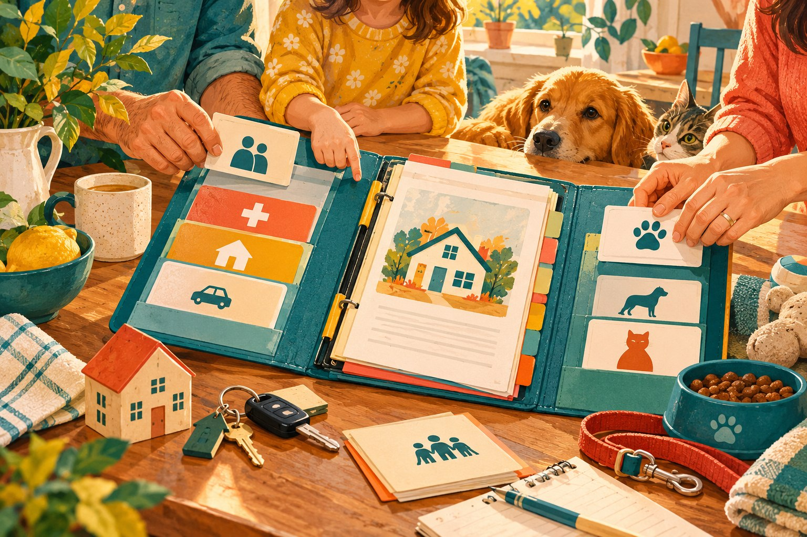

What Information Should Your Family Know in an Emergency?
A starting checklist for contacts, records, care information, property, pets, accounts, digital life, and document locations.

Open Theory Cove books often begin with a practical question. The blog gives those questions more room: checklists you can use, ideas you can test, explanations that go deeper than a product page, and updates for subjects that continue to change.
Explore preparedness and organization, selling and small business, creativity and journaling. Articles connect to related books and to one another so you can follow a subject as far as it is useful to you.
Practical ways to organize the information, records, responsibilities, and everyday knowledge another person may someday need.

A starting checklist for contacts, records, care information, property, pets, accounts, digital life, and document locations.
Focused resources from Etsy Unlocked that treat visibility as a problem to diagnose—not a pile of algorithm tricks.
Use shop data, improve a listing for real buyers, build sustainable traffic, and measure the change.
Separate search signals, click appeal, buyer questions, pricing, and measurement.
Give every image a job, from earning the first click to answering buyer questions.
Use views, visits, conversion, and traffic sources as diagnostic signals.
Writing prompts, journaling practices, creative projects, and practical ways to capture ideas and memories.
Simple prompts for noticing what matters in the morning, reflecting at night, and keeping the practice realistic on hard days.

Choose a goal that matters, break it into seven manageable steps, and pair daily intention with practical action and reflection.
What research says about expressive writing, plus a simple What, So What, Now What method for getting started.

A practical process for using your strengths, values, needs, research, and small experiments to choose a direction worth testing.